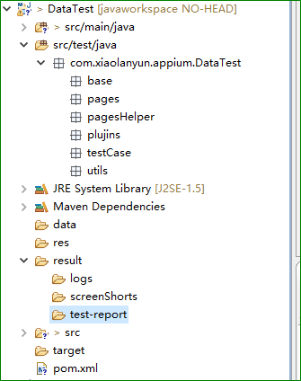
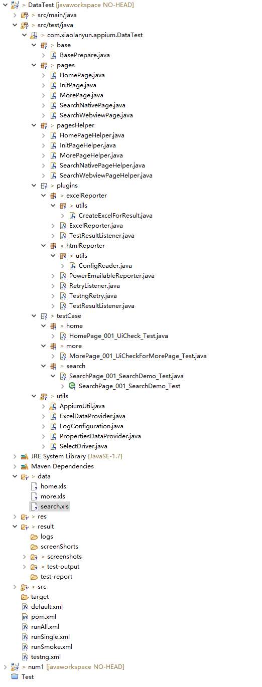

11.3、自动化测试框架
1、框架概览


包类文件类解释：
base包：
BasePerpare.java：启动和结束测试，以及数据提供者，提供测试数据,预处理
pages包：页面元素存放
pagesHelper包：
对该页面的操作方法存放，如点击，等待加载，验证文本内容，输入，清空等方法
plugins包：
excel和html插件
testCase包：
测试用例，调用Helper里面的各种方法进行操作
utils包：
AppiumUtil.java:
封装appium的api:
1、获取driver；
2、退出app；
3、退出移动浏览器；
4、通过By对象去查找某个元素；
5、通过By对象去查找一组元素；
6、清空元素内容；
7、输入内容；
8、点击；
9、查找一个元素，appium新增的查找元素方法；
10、查找一组元素，appium新增的查找元素方法；
11、获取文本1{getText(By by)}；
12、获取文本2{getText(String locateWay,String locateValue)}；
13、提交；
14、获得webview页面的标题；
15、获得元素属性的文本；
16、在给定的时间内找元素，如果没有找到则超时，抛出异常；
17、判断文本是不是和需求要求的文本一致；
18、暂停当前用力地执行，暂停的是件为：sleepTime；
19、根据元素来获取次元素的定位值；
20、判断实际文本时候包含期望文本；
21、跳转到webview页面（int index）；
22、跳转到webview页面（String contextName）;
23、执行javascript方法；
24、执行JavaScript方法和对象；
25、检查元素是不是存在；
26、长按操作；
27、滑动；
28、滚动，根据文本模糊匹配；
29、滚动，根据文本精准匹配；
30、拖拽操作；
31、 放大和缩小；
32、app置于后台运行；
33、收起键盘；
34、安装app；
35、app是否安装；
36、页面过长时候滑动页面window.scrollTo(左边距，上边距)；
37、后退
38、打开应用
LogConfiguration.java:
配置日志
PropertiesDataProvide.java:
从.properties文件中读取相关测试数据
SelectDriver.java:
根据测试平台的不同生成不同的driver 比如AndroidDriver 或者是IOSDriver
result文件夹：
存放结果，包括excel和html结果
xml文件：
default.xml【书上自己建立的一个testng默认配置文件，要有】和testng.xml【这个是我自己生成的一个默认配置，不用管，没有也可以】
runAll.xml:测试多条用例顺序执行测试
runSingle.xml:测试单条用例执行测试
runSmoke.xml:冒烟测试
pom.xml:maven仓库管理依赖配置文件,以及要运行的testng.xml测试用例文件
【详细解释
Base
BasePrepare.java,这个类的主要作用是启动和关闭APP的作用，启动APP使用了TetsNG的@BeforeClass ，在@BeforeClass下会初始化APP并设置与APPIUM通信的相关数据。关闭APP使用了TestNG的@AfterClass，在这个注释下写了APP退出的操作；测试用例类中则是以@Test注释为主体的，在@Test注释下，书写了完整的测试步骤。测试用例继承这个BasePrepare.java
pages
页面元素类，每一个java类，都是一个页面，存放的都是对应页面的所有元素
pageshelper
存放的是对应页面的帮助类，这是什么意思？简单的说：在这个页面上做了什么操作都写在这个pageshelper中，如登录页面的方法
plugins
主要存放的是html报告插件和excel报告插件
Testcases
存放测试用例，有很多子包，子包的个数根据你测试的系统的模块来划分
Utils
封装了各种工具类，包括读取excel，appium api封装类，读取数据库类，读取属性文件类和生成driver的类等。
其余文件说明，不一定要自己去建立
bin目录：
项目编译生成class文件存放目录，这个目录不用去管，Eclipse会自动控制。
config目录：
存储框架类所需的所有属性文件，比如arrow的配置文件以及自定义的一些属性文件。
result目录：
存储测试框架运行测试用例生成的报告（包含log，截图等）
src和target目录：
可以不用管，由maven控制即可，整个框架，没有用到此目录，大家可以忽略。
接下来还剩几个xml文件，我们也来一一介绍一下：
pom.xml：
maven的配置文件，项目核心配置，用于构建项目、自动下载项目依赖以及后续的和testng、jenkins配合持续集成等
runAll.xml：
这是testng的配置文件，用于存放部分测试数据以及测试的平台，浏览器的配置、加入第三方插件监听（arrow插件）、设置用例执行策略（多线程还是单线程，顺序执行还是无序执行以及是否依赖执行等）以及设置要执行的用例。之所以改成runAll顾名思义就是说执行整个web项目的所有模块的用例的测试
runSingle.xml
和runAll.xml一样，不多解释，不一样的地方就是用它来做单个用例的调试改错，只涉及到单个的类（用例），所以调试改错专用。比如我用runAll.xml跑完了所有的用例，但是发现个别用例失败，此时先去分析log，如果是代码问题就去调试代码，调试完毕之后就去用runSingle.xml去跑一边此用例。
default.xml:
只存储了测试参数（parameter）以及监听器（arrow），没有任何测试用例放在里面，这个xml文件是为了本框架的一个默认testng配置文件，主要是为了，直接在测试用例中右键运行测试用例，如果不配置一个默认的文件，直接在测试用例类中直接运行会跳过用例。因为xml文件中存储了一些必须的参数，比如测试浏览器是什么，测试平台是什么等等。框架搭建过程中会讲到如何设置default.xml文件。
runSmoke.xml：
这个主要执行冒烟测试用的，冒烟测试我们会先一些基本和核心功能作为测试重点，迅速跑一遍这些功能点，看看这个软件版本能不能released
】
2、框架快速上手
本地编写测试用例，首先需要配置好环境。
编写示例：以登陆界面为例
pages包下建立LoginPage.java，定义界面元素，格式参见框架源码相应文件。
pagesHelper包下建立LoginPageHelper.java,封装对登陆界面元素操作的方法，其操作函数调用的是Utils包下封装的appium函数，格式参见框架源码相应文件。
testCase包下建Login包，Login包下建立LoginPage_001_UICheckForLogin_Test.java，是测试用例，调用pagesHelper包下的LoginPageHelper.java中封装的操作方法，编写测试逻辑，格式参见框架源码相应文件。
命名规范：
1、操作页面，LoginPage，必须带有Page字段
2、用例编号，001，输出测试报告时进行读取，必须设置
3、测试用例描述，UICheckForLogin
4、文件作用，Test
在testng.xml中配置appium和手机相关参数，配置需要运行的测试用例，格式参见源码相应文件。
在pom.xml中配置需要运行的testng.xml文件，格式参见框架源码相应文件。
3、好处
在pagesHelper包下的界面操作方法封装使得编写测试用例时，测试逻辑容易编写，在长期项目中，封装的界面操作方法复用性极高，不同的组合即可形成新的测试逻辑。